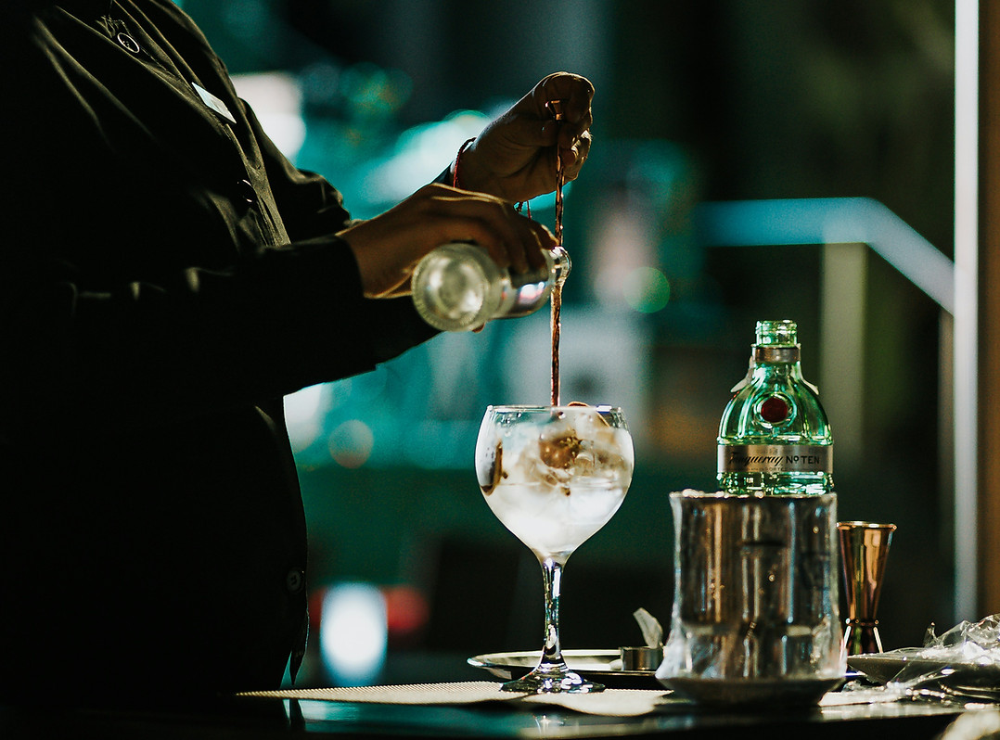
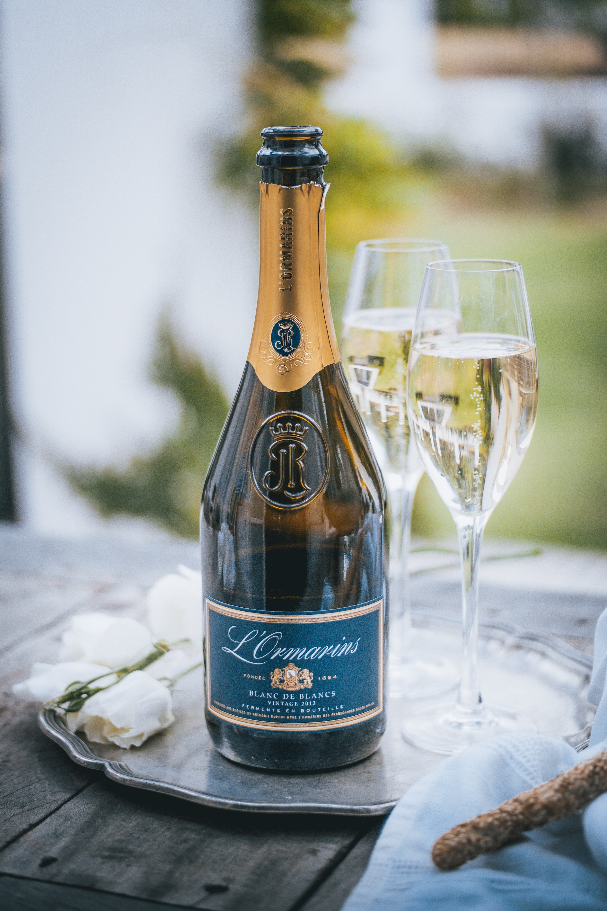

COCKTAILS
- Mimosa
L'Ormarins Brut, fresh orange juice95 - Bellini
L'Ormarins Brut, peach liqueur, peach puree115 - Aperol Spritz
Sparkling wine, Aperol, soda water125 - Hail Mary
Smirnoff, lime juice, tomato juice, horseradish cream, tobasco115 - Cosmopolitan
Smirnoff, cointreau, cranberry juice, lime juice90 - Espresso Martini
Smirnoff vanilla, mischu espresso, kahlua, sugar syrup95 - Gin Basil Smash
Tanqueray, lime juice, sugar syrup, basil leaves80 - Negroni
Tanqueray, campari, martini rosso85 - Martini
Tanqueray / Smirnoff, dry martini85 - Porn Star Martini
Smirnoff vanilla, apple juice, passion vanilla puree, passoa liqueur, lime juice95 - Ciroc Martini
Ciroc, dry martini130 - Whiskey Sours
Johnnie Walker Blonde, sugar syrup, lemon juice, foaming agent90 - Bourbon Sours
Bulleit, amaretto, sugar syrup, foaming agent95 - Margarita
Jose Cuervo traditional, triple sec, lime juice, sugar syrup98 - Don Julio Margarita
Don Julio, cointreau, lime juice, sugar syrup195 - Strawberry Daiquiri
Havanna Club Anejo Blanco, fresh strawberries, strawberry puree, lime juice105 - Mojito
Havanna Club Anejo Blanco, fresh lime, mint syrup, Captain Morgan105 - Paloma
Jose Cuervo traditional blanco, grapefruit tonic, lime juice95


WINE BY THE GLASS
BUBBLES BY THE GLASS - 175ML
- L'Ormarins Brut Classique NV95
- L'Ormarins Brut Classique Rose NV95
WINE BY THE CARAFE - 250ML
- Cult White60
- Cult Rose60
- Cult Red60
- Paul Cluver Sauvignon Blanc110
- Protea Sauvignon Blanc75
- Brampton Unoaked Chardonnay85
- Protea Chardonnay75
- Paul Cluver Village Chardonnay125
- Old Road Wine Co Le Courier Chenin Blanc95
- Gorgeous Pinot Noir Chardonnay90
- Protea Cabernet Sauvignon75
- Franschhoek Cellar The Old Museum Merlot75
- Protea Shiraz75
- Paul Cluver Village Pinot Noir135
- Bellingham Pinotage90
METHODE CAP CLASSIQUE
- L'Ormarins Blanc de Blanc
2021 / Chardonnay / Western cape575 - L'Ormarins Brut Classique
NV / Chardonnay, Pinot Noir / Elandskloof425 - L'Ormarins Brut Classique Rosé
NV / Pinot Noir, Chardonnay / Franschhoek425 - Boschendal Brut
NV / Chardonnay, Pinot Noir / Western Cape510 - Boschendal Brut Rosé
NV / Pinot Noir / Chardonnay / Pinotage / Coastal Region510
CHAMPAGNE
- Moet & Chandon Brut Imperial
NV / Pinot Meunier / Chardonnay / Epernay, France1250
WHITES
- Cape of Good Hope Altima Sauvignon Blanc
2024 | Elandskloof385 - Durbanville Hills Sauvignon Blanc
2025 | Durbanville Hills235 - Fryers Cove Cape West Coast Sauvignon Blanc
2024 | Bamboes Bay405 - Paul Cluver Sauvignon Blanc
2025 | Elgin320 - Protea Sauvignon Blanc
2025 | Western Cape215 - Avontuur Luna Del Meil Chardonnay
2024 | Stellenbosch390 - Brampton Unoaked Chardonnay
2024 | Elandskloof240 - Cape of Good Hope Serruria Chardonnay
2024 | Elandskloof520 - De Wetshof Limestone Hill Chardonnay
2025 | Robertson275 - La Motte Chardonnay
2023 | Franschhoek440 - Paul Cluver Village Chardonnay
2024 | Elgin370 - Protea Chardonnay
2025 | Western Cape215 - Cape Of Good Hope Riebeeksrivier Chenin Blanc
2025 | Swartland420 - Cederberg Chenin Blanc
2025 | Cederberg315 - Fryers Cove Cape West Coast Chenin Blanc
2024 | Bamboes Bay395 - Old Road Wine Co Le Courier Chenin Blanc
2025 | Western Cape275 - Cult White
2025 | Franschhoek, Chenin Blanc, Marsanne, Rousanne, Viognier185 - Paul Cluver Village Riesling
2025 | Elgin360 - Terra Del Capo Pinot Grigio
2025 | Western Cape245
ROSÉ
- Cult Rose
2025 | Franschhoek, Shiraz, Viognier185 - Gorgeous Pinot Noir Chardonnay
2024 | Western Cape255


RED
- Diemersdal Cabernet Sauvignon
2023 | Durbanville325 - La Motte Cabernet Sauvignon
2022 | Stellenbosch385 - Protea Cabernet Sauvignon
2023 | Western Cape215 - Franschhoek Cellar The Old Museum Merlot
2023 | Western Cape240 - Guardian Peak Merlot
2023 | Western Cape295 - Protea Merlot
2023 | Darling215 - Cape of Good Hope Riebeeksrivier Syrah
2020 | Swartland350 - Old Road Wine Co The Anvil Shiraz
2021 | Western Cape275 - Protea Shiraz
2023 | Darling215 - Cape of Good Hope Sneeuwkrans Pinot Noir
2019 | Elandskloof750 - Paul Cluver Village Pinot Noir
2024 | Elgin370 - Belling The Homestead Pinotage
2021 | Stellenbosch275 - Kanonkop Kadette Pinotage
2023 | Stellenbosch370 - Anthonij Rupert Optima
2021 | Cabernet Sauvignon, Merlot, Cabernet Franc, Malbec | Darling620 - Boschendal Nicolas
2023 | Cab Sauv, Shiraz, Merlot, Malbec, Cabernet Franc, Petit Verdot | Western Cape575 - Cult Red
2024 | Franschoek, Shiraz, Grenache, Carignan185 - La Motte Millenium
2022 | Western Cape, Merlot, Cabernet Franc, Cabernet Sauvignon, Petit Verdot320 - Terra Del Capo Sangiovese
2022 | Groenekloof310
OTHER BEVERAGES
ON TAP - 300ml | 500ml
- Castle Lite40 | 52
- Stella45 | 58
- Newlands Spring Pale Ale42 | 55
- Guinness48 | 62